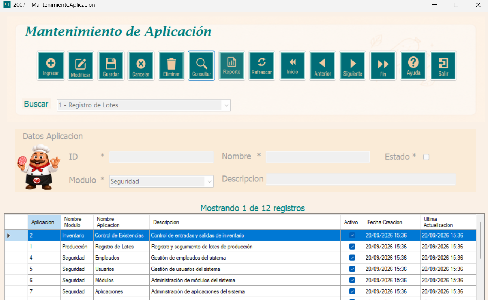
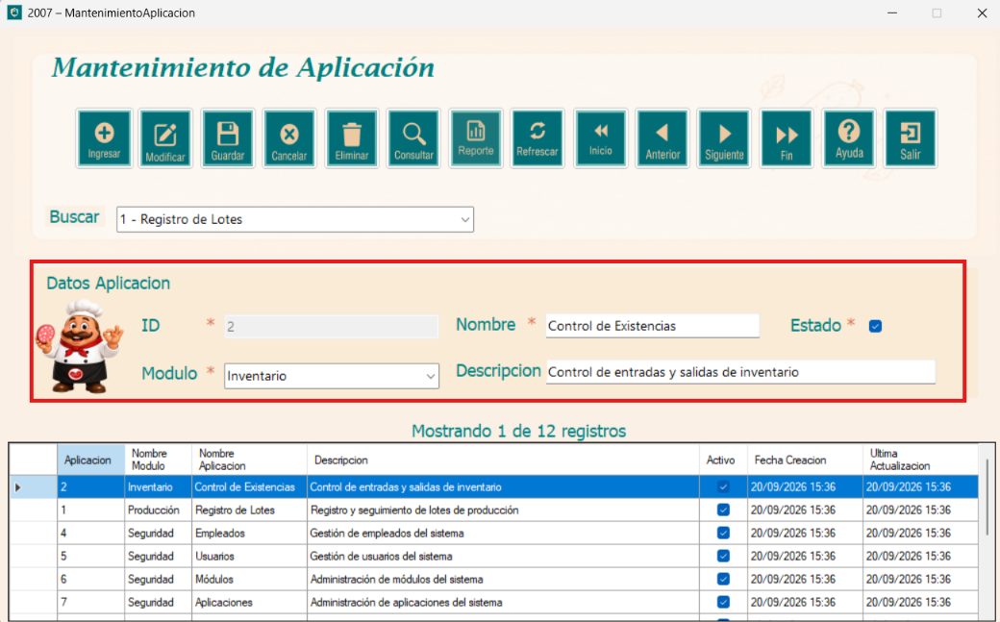
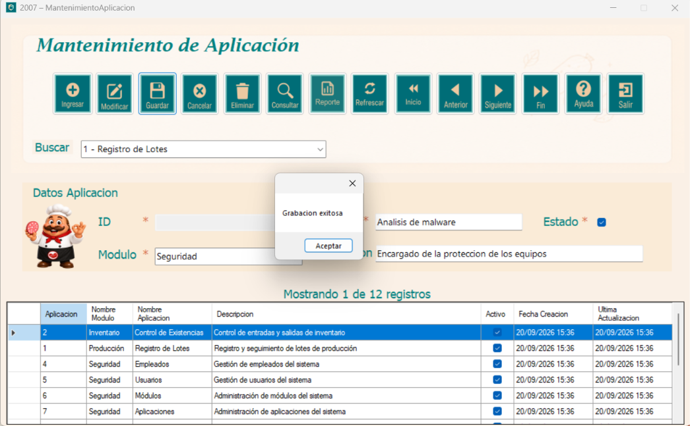
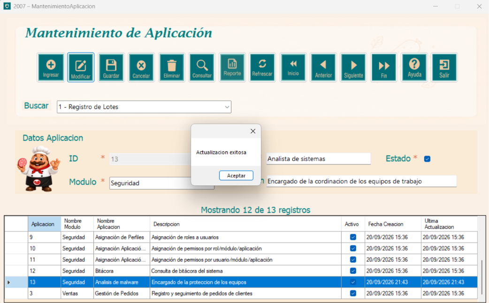
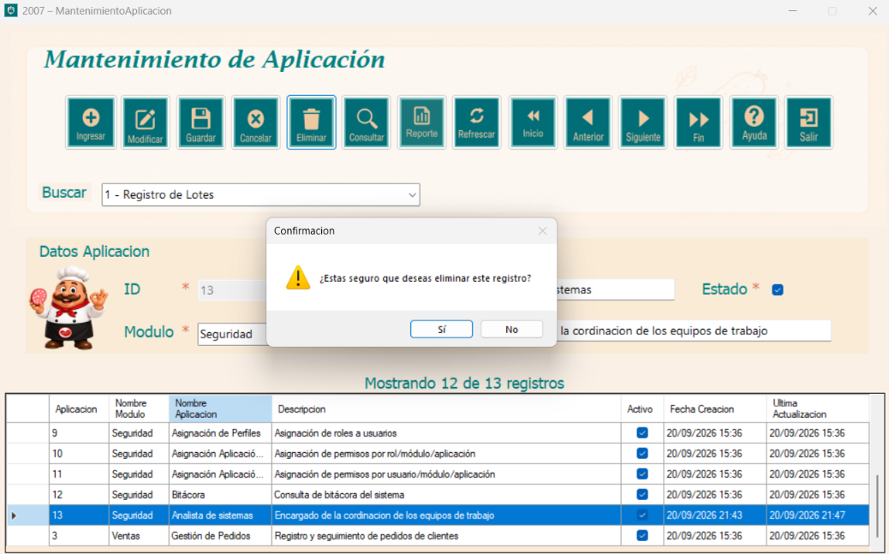
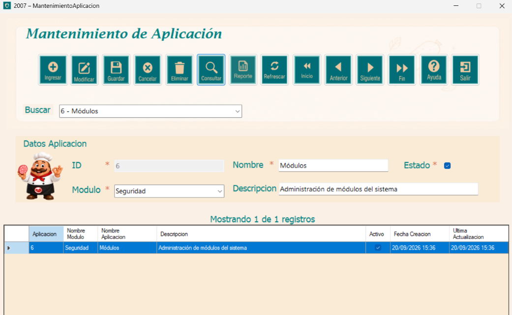
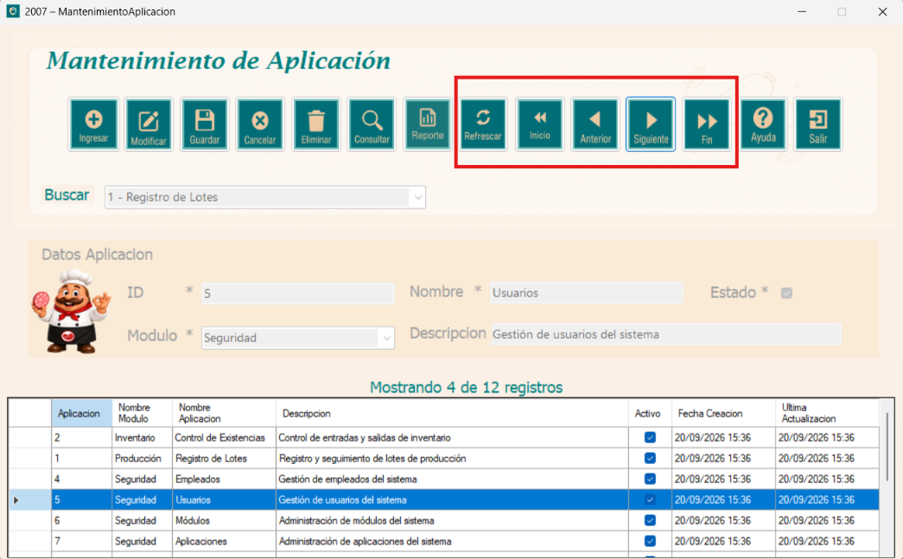
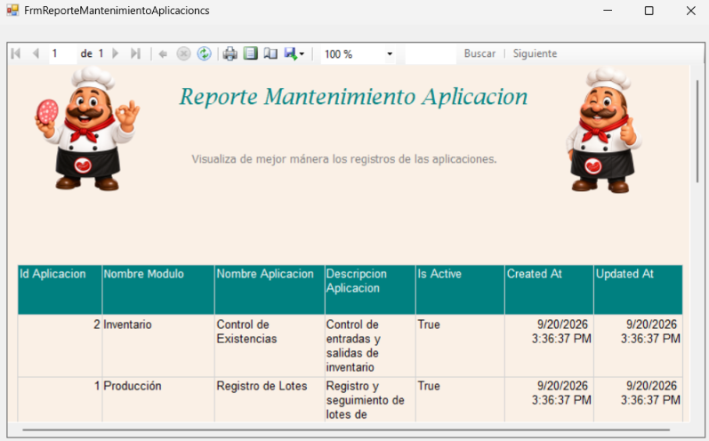
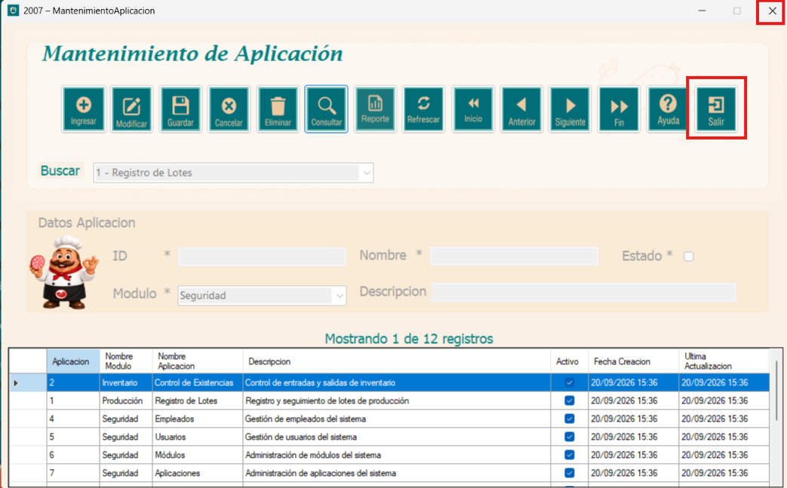

El módulo de Mantenimiento de Aplicación es parte del componente de Seguridad del sistema,
desarrollado para Embutidos de Calidad S.A. Su función principal es administrar el catálogo
de aplicaciones del sistema, permitiendo registrar, consultar, modificar y eliminar las
aplicaciones según las necesidades de la organización.
Cada aplicación está asociada a un módulo correspondiente, cuenta con un nombre, descripción y
estado que indica si se encuentra activo o inactivo. Mantener este catálogo actualizado es de
vital importancia, ya que estas aplicaciones son referenciadas por el módulo de asignación de
aplicaciones a Perfiles para controlar los accesos de cada usuario.

Esta ventana es la interfaz principal para la administración de las aplicaciones del sistema, permite registrar el nombre, descripción, módulo al que pertenece y su estado ya sea activo o inactivo de cada aplicación. Al ingresar el formulario podemos observar que se encuentra bloqueado hasta que se presione el botón Ingresar y se desbloquea la parte del formulario.

A continuación se detallan los pasos: 1. Presionar el botón Ingresar para habilitar el formulario. 2. Se selecciona el módulo al que pertenece la aplicación desde el combo desplegable. 3. Ingresar el nombre, la descripción y marque el checkbox de Estado, si la aplicación estará activa. 4. Una vez que se termine de llenar los campos, presionar Guardar para almacenar el registro.

A continuación se detallan los pasos: 1. Seleccionar la fila correspondiente en la tabla. 2. Los datos se cargarán automáticamente en el formulario. 3. Realice los cambios necesarios y presione el botón Modificar para guardarlos. 4. Si no selecciona ninguna fila, el sistema mostrará un aviso indicando que debe seleccionar un registro primero.

A continuación se detallan los pasos: 1. Seleccionar la fila que desea remover de la tabla. 2. Presionar el botón Eliminar. 3. Se solicitará confirmación antes de proceder. 4. Al confirmarse, el registro será removido del sistema.

A continuación se detallan los pasos: 1. Seleccionar el criterio de búsqueda en el combo Buscar. 2. Presionar el botón Consultar. 3. Se mostrará en la tabla todos los registros que coincidan con el criterio ingresado. 4. También se incluye un contador de registros para mejor control del listado mostrado.

El formulario proporciona el botón Refrescar que se encarga de recargar todos los datos desde la base de datos y botones de navegación que permiten desplazarse entre los registros de la tabla: 1. Inicio va al primer registro. 2. Anterior retrocede uno. 3. Siguiente avanza uno. 4. Fin va al último registro.

El sistema permite obtener un reporte de todas las aplicaciones registradas y para poder observarlo se debe seguir los siguientes pasos: 1. Presionar el botón Reporte. 2. Se abrirá una ventana con el listado completo donde se muestra el ID, nombre, descripción, módulo al que pertenece, estado y fechas de creación y última actualización. 3. Desde la barra superior del reporte es posible desplazarse entre páginas, actualizar la información, ajustar el zoom, buscar un texto, imprimirlo o exportarlo.

Para salir de la ventana de aplicación, se deberá presionar el botón de salir o dar click en la X que se encuentra en la parte superior derecha.
